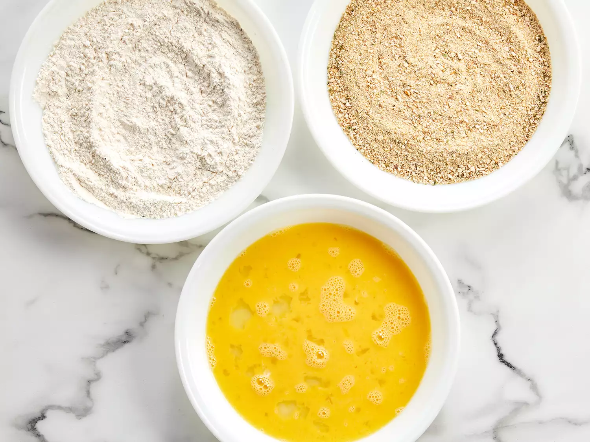
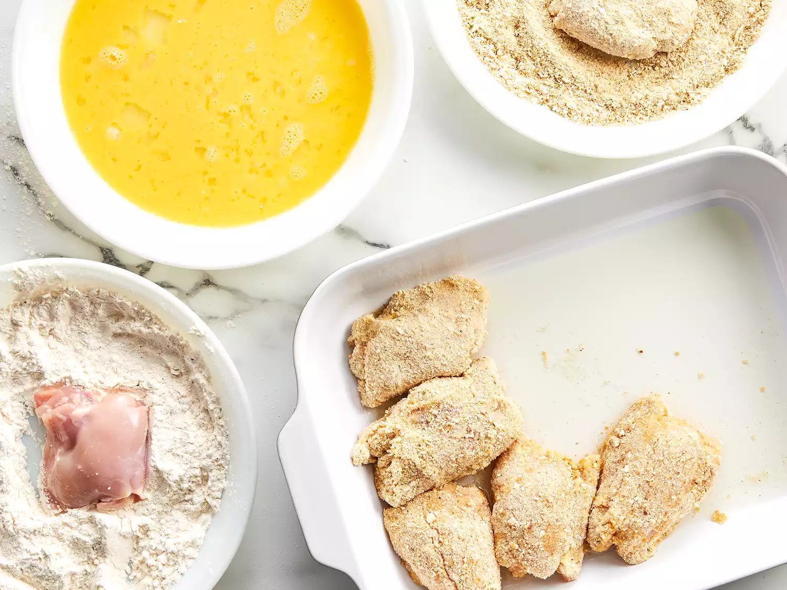
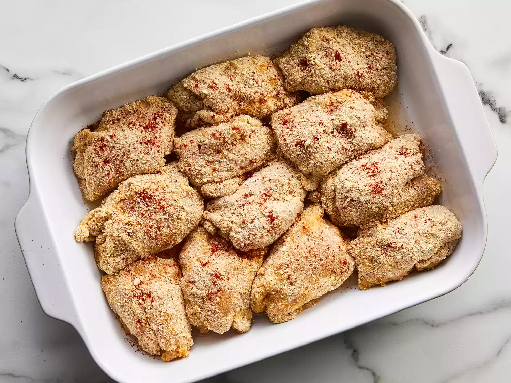

This oven-fried chicken is so much easier and less messy than traditional fried chicken! Cut down on oil by making "fried" chicken in the oven. This oven-fried chicken recipe, made with simple ingredients you probably already have on hand, is as good as it gets.
Here's what you'll need to make this oven-fried chicken recipe:
Here are the step-by-step directions for the recipe:
Preheat the oven to 350 degrees F (175 degrees C).
Place flour in a shallow plate or bowl and season with salt and pepper to taste. Put bread crumbs in another shallow plate or bowl and beat eggs in another bowl.
Dredge chicken piece by piece in the flour, then the egg, then the bread crumbs, until all pieces are coated.
Pour oil into a large baking dish; add the breaded chicken thighs and sprinkle with paprika to taste.
Bake in the preheated oven for 30 minutes, then turn pieces over and bake for another 30 minutes. Remove from the oven and drain on paper towels.
Serve hot and enjoy!